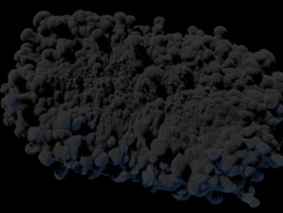
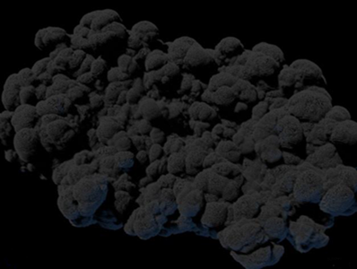

某些 Aero 模拟可能会显示瑕疵，就好像细节程度非常高的线条噪波。要处理这些问题，请尝试下列方法。
| 噪波 | 平滑 |
|---|---|
|  |  |
| 沿中心在最大步数 = 30 时的噪波线条。 | 最大步数 = 1 时的结果更平滑。 |
降低 aero_solver_settings 节点上的最大步数。
减小 source_air 节点上的 fluid_detail_size（如果可用的计算机内存和时间预算允许）。
如果 aero_solver_settings 节点上的 style 设置为 busy，请尝试将其设置为 fluffy 或 wispy。如果已设置为以上任一值，请尝试将其设置为 smooth。请注意，这也会降低细节量，因此它可能并非始终为合适的解决方案。
将 aero_solver_settings 节点上的 velocity_smoothness 设置为介于 0 和 1 之间的值。请先尝试一个非常小的数字，以避免流粘性过大。
有关与速度平滑相关的更多选项：
simulate_aero 设置为可编辑，然后转到该节点。solve_aero 设置为可编辑，然后转到该节点。solve_aero 复合。solve_aero_substep 设置为可编辑，然后转到该节点。solve_pressure 节点上的 velocityFilterType 和 numVelocityFilterIterations。如果自定义了默认图表并且要在模拟中添加高频率细节，请尝试平滑贡献，然后再添加它们。您可以使用 smooth_voxel_property 节点执行此操作，请确保将 voxel_filter_width 设置为 1 或更大。